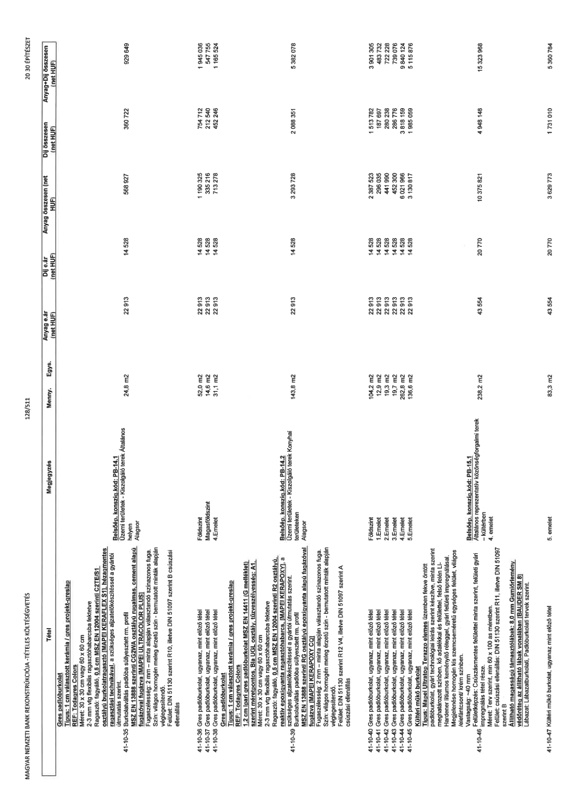

| Tétel | Megjegyzés | Menny. | Egys. | Anyag e.ár (net HUF) | Díj e.ár (net HUF) | Anyag összesen (net HUF) | Díj összesen (net HUF) | Anyag+Díj összesen (net HUF) |
|---|---|---|---|---|---|---|---|---|
| 41-10-35 Gres padlóburkolat Típus: 1 cm választott kerámia / gres projekt-greslap REF: Todagres Colors Méret: 30 x 30 cm vagy 60 x 60 cm 2-3 mm vtg flexibilis ragasztóhabarcsba fektetve Ragasztó: fagyálló, 0,5 cm MSZ EN 12004 szerinti C2TE/S1 osztályú burkolatragasztó [MAPEI KERA FLEX S1], hézagmentes ragasztási technikával, a szükséges aljzat előkészítéssel a gyártói útmutatás szerint. Burkolatváltás padlóba süllyesztett rm. profil MSZ EN 13888 szerinti CG2WA osztályú rugalmas, cement alapú fugázóval fugázva [MAPEI ULTRACOLOR PLUS] Fugaszélesség: 2 mm - minta alapján választandó színazonos fuga. Szín: világos homogén meleg érzetű szín - bemutatott minták alapján véglegesítendő. Felület: DIN 51130 szerint R10, illetve DIN 51097 szerint B csúszási ellenállás | Belsőép. konszig. kód: PB-14.1 Üzemi területek - Kiszolgáló terek Általános helyen Alagsor | 24,8 | m2 | 22 913 | 14 528 | 568 927 | 360 722 | 929 649 |
| 41-10-36 Gres padlóburkolat, ugyanaz, mint előző tétel | Földszint | 52,0 | m2 | 22 913 | 14 528 | 1 190 325 | 754 712 | 1 945 036 |
| 41-10-37 Gres padlóburkolat, ugyanaz, mint előző tétel | Magasföldszint | 14,6 | m2 | 22 913 | 14 528 | 335 216 | 212 540 | 547 755 |
| 41-10-38 Gres padlóburkolat, ugyanaz, mint előző tétel | 4.emelet | 31,1 | m2 | 22 913 | 14 528 | 713 278 | 452 246 | 1 165 524 |
| 41-10-39 Gres padlóburkolat Típus: 1 cm választott kerámia / gres projekt-greslap REF: Todagres Colors 1.2 cm ipari gres padlóburkolat MSZ EN 14411 (G melléklet) szerint méretpontos, Bla UGL osztály, tűzveszélyesség: A1. Méret: 30 x 30 cm vagy 60 x 60 cm 2-3 mm vtg flexibilis ragasztóhabarcsba fektetve Ragasztó: fagyálló, 0,5 cm MSZ EN 12004 szerinti R2 osztályú, reaktív epoxigyanta ragasztóhabarcs, [MAPEI KERAPOXY], a szükséges aljzat előkészítéssel a gyártói útmutatás szerint. Burkolatváltás padlóba süllyesztett rm. profil MSZ EN 13888 szerinti RG osztályú epoxigyanta alapú fugázóval fugázva [MAPEI KERAPOXY CQ] Fugaszélesség: 2 mm - minta alapján választandó színazonos fuga. Szín: világos homogén meleg érzetű szín - bemutatott minták alapján véglegesítendő. Felület: DIN 51130 szerint R12 V4, illetve DIN 51097 szerint A csúszási ellenállás | Belsőép. konszig. kód: PB-14.2 Üzemi területek - Kiszolgáló terek Konyhai területeken Alagsor | 143,8 | m2 | 22 913 | 14 528 | 3 293 728 | 2 088 351 | 5 382 078 |
| 41-10-40 Gres padlóburkolat, ugyanaz, mint előző tétel | Földszint | 104,2 | m2 | 22 913 | 14 528 | 2 387 523 | 1 513 782 | 3 901 305 |
| 41-10-41 Gres padlóburkolat, ugyanaz, mint előző tétel | 1.Emelet | 12,9 | m2 | 22 913 | 14 528 | 296 035 | 187 697 | 483 732 |
| 41-10-42 Gres padlóburkolat, ugyanaz, mint előző tétel | 2.Emelet | 19,3 | m2 | 22 913 | 14 528 | 441 990 | 280 238 | 722 228 |
| 41-10-43 Gres padlóburkolat, ugyanaz, mint előző tétel | 3.Emelet | 19,7 | m2 | 22 913 | 14 528 | 452 300 | 286 776 | 739 076 |
| 41-10-44 Gres padlóburkolat, ugyanaz, mint előző tétel | 4.Emelet | 262,8 | m2 | 22 913 | 14 528 | 6 021 966 | 3 818 159 | 9 840 124 |
| 41-10-45 Gres padlóburkolat, ugyanaz, mint előző tétel | 5.Emelet | 136,6 | m2 | 22 913 | 14 528 | 3 130 817 | 1 985 059 | 5 115 876 |
| 41-10-46 Kültéri műkő burkolat Típus: Mapei Ultratop Terrazzo elemes üzemben fekve öntött padlóburkolat, gyári technológiai leírás szerint készítve, minta szerint meghatározott színben, kő adalékkal és felülettel, felső felén Li- Hardener lítiumos keményítő réteggel, gyári felületi impregnálással. Megjelenése homogén kis szemcseméretű egységes felület, világos /elefántcsont/ krém színben. Vastagság: ~40 mm Felületképzés: Csúszásmentes felülettel minta szerint, felületi gyári impregnálás tétel része. Méret: Terv szerint, min 60 x 100 as méretben. Felület: csúszási ellenállás: DIN 51130 szerint R11, illetve DIN 51097 szerint B Állítható magasságú támasztólábak: 8,0 mm Gumiőrlemény védőréteg az állítható lábak vonalában [BAUDER SM 8] Lábazat: Lábazatburkolati tervek szerint. | Belsőép. konszig. kód: PB-15.1 Általános reprezentatív közönségforgalmi terek - Kültérben 4. emelet | 238,2 | m2 | 43 554 | 20 770 | 10 375 821 | 4 948 148 | 15 323 968 |
| 41-10-47 Kültéri műkő burkolat, ugyanaz mint előző tétel | 5. emelet | 83,3 | m2 | 43 554 | 20 770 | 3 629 773 | 1 731 010 | 5 360 784 |
